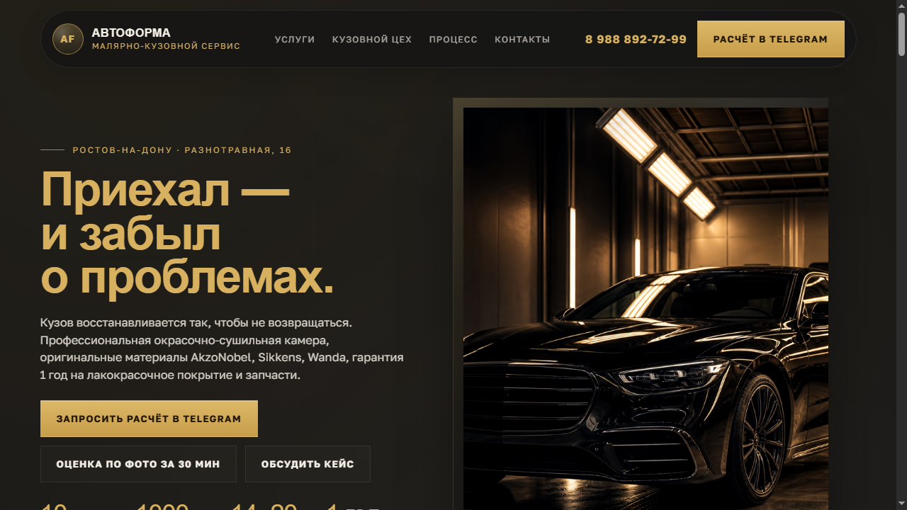
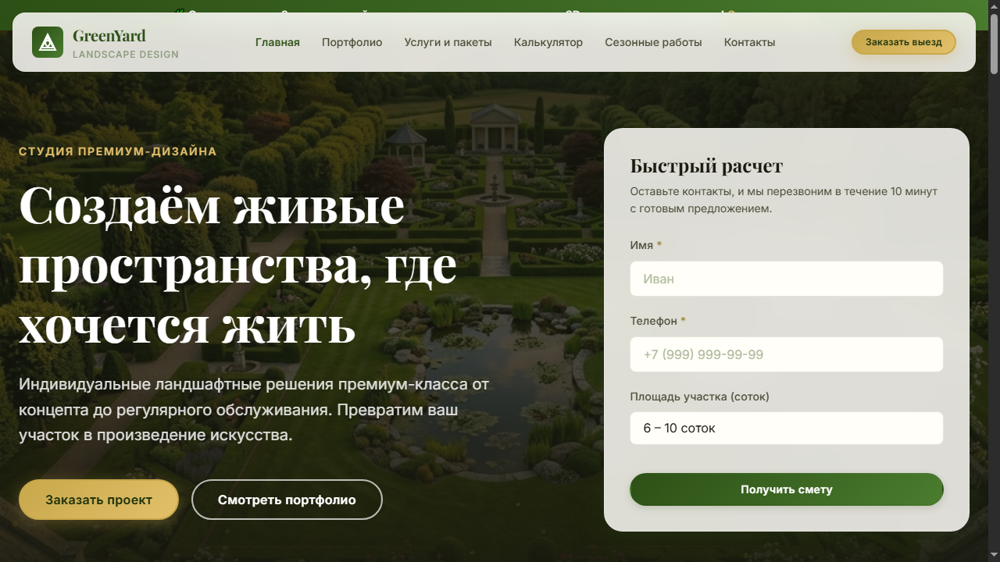
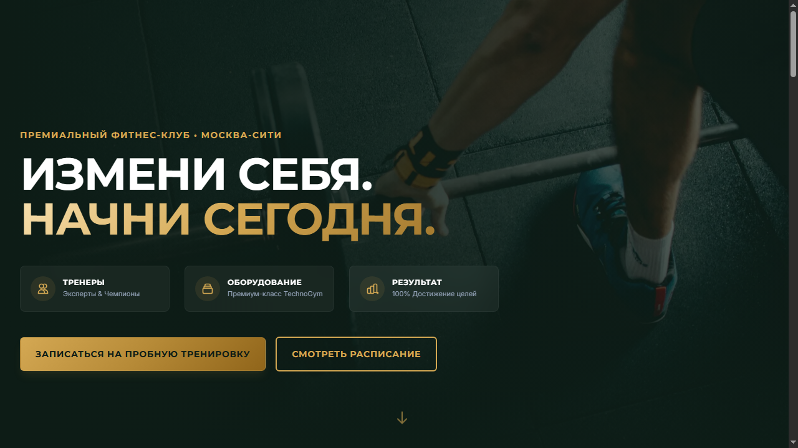
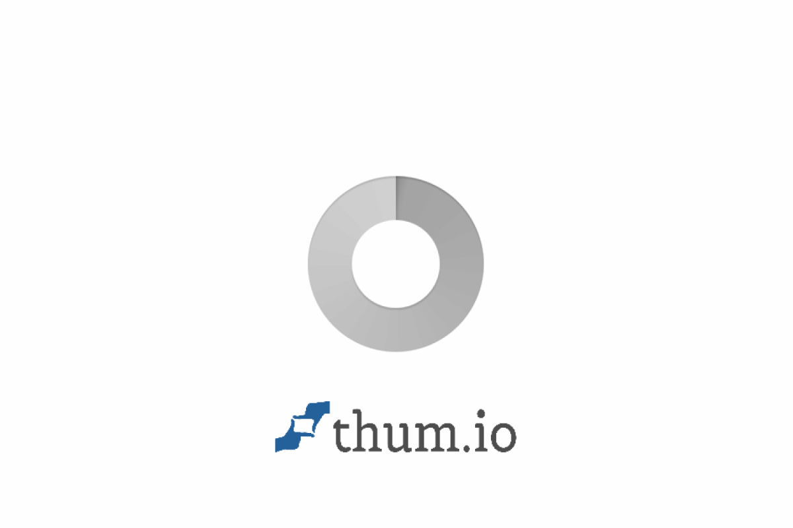
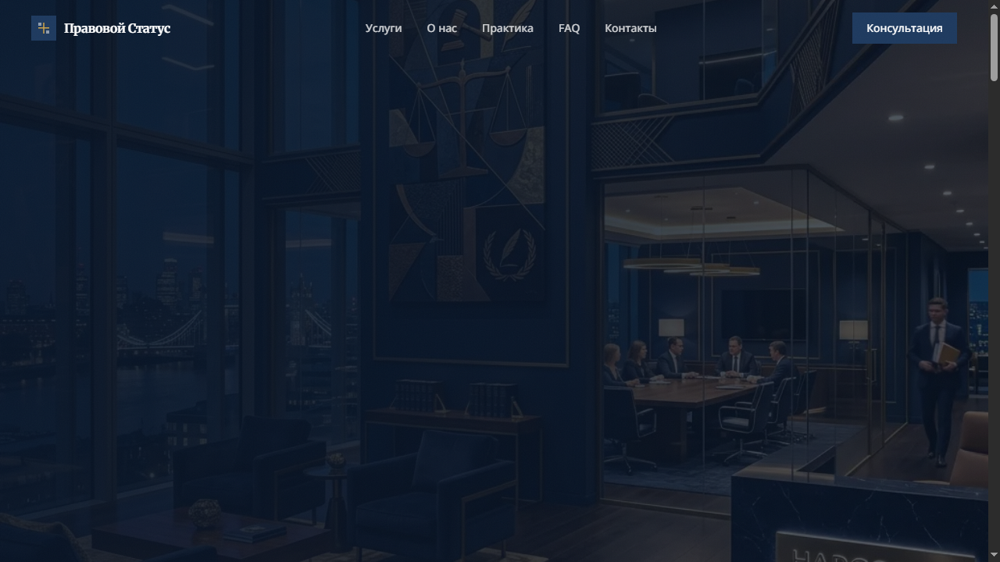

Детейлинг-студия
Лендинг для студии автодетейлинга. Фокус на премиальном визуале и форме записи.
Разработка сайтов под ключ, Telegram-боты, интеграция ИИ.
От конверсионных лендингов для бизнеса до многостраничных платформ.
Разработка ботов для записи клиентов, интеграция с Google Sheets (Python, aiogram, FastAPI).
Внедрение AI-ассистентов для автоматизации продаж и поддержки пользователей.

Лендинг для студии автодетейлинга. Фокус на премиальном визуале и форме записи.

Сайт-визитка с презентацией услуг по озеленению и благоустройству.

Платформа для фитнес-центра с расписанием и презентацией залов.

Сайт премиальной стоматологии в Москве с современным дизайном и удобной записью на приём.

Сайт премиальной юридической фирмы: корпоративное право, банкротство, судебные споры. Современный дизайн с упором на доверие и конверсию.
Бот для строительной компании отвечает на вопросы по сантехническим и отопительным работам, считает примерную стоимость и передаёт заявку администратору.
Напишите мне напрямую в мессенджер.